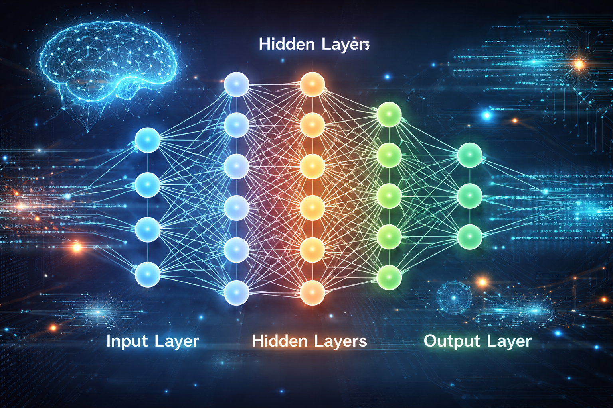
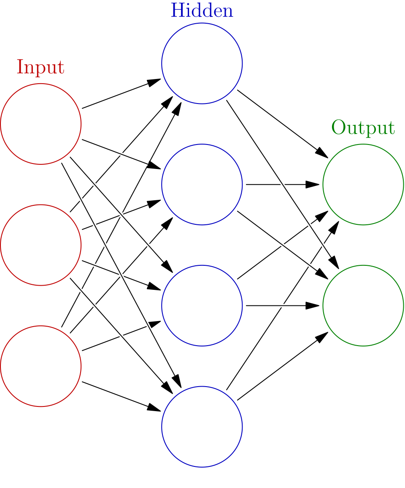

Introducere
Rețelele neurale artificiale sunt sisteme de calcul inspirate din funcționarea creierului uman și sunt utilizate în inteligența artificială pentru recunoaștere de tipare, predicții și învățare automată.
Informația este preluată din Wikipedia: Rețea neuronală artificială

Tipuri de rețele neurale
Există mai multe tipuri de rețele neurale, precum rețele neuronale convoluționale (CNN), rețele recurente (RNN) și rețele perceptron multistrat.
Rețea neuronală convoluțională

Funcționare
Rețelele neurale sunt formate din neuroni artificiali organizați în straturi: strat de intrare, straturi ascunse și strat de ieșire.

Aplicații
Rețelele neurale sunt folosite în recunoaștere facială, traducere automată, mașini autonome și sisteme de recomandare.